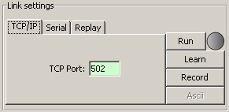
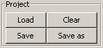
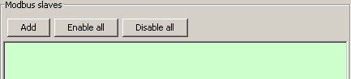

This panel contains buttons to
activate useful options, such as scripts.
This panel contains buttons to
activate useful options, such as scripts.ModbusPal is a MODBUS slave simulator. Its purpose is to offer an easy to use interface with the capabilities to reproduce realistic MODBUS environments.
The core of ModbusPal is written in Java. TCP/IP is supported natively, and the serial communication is supported if RxTx Project is installed on the computer.
Other simulation tools offer built-in functions to “animate” the data of the virtual MODBUS slaves. But there are always situations where predefined functions cannot reproduce the reality. The approach of ModbusPal is to let the user write external scripts: what predefined functions can’t do, scripts will.
The second key feature of ModbusPal is the “Learn” mode. As ModbusPal receives MODBUS requests from the master, it will dynamically create the missing resources: slaves, registers and coils are generated on-the-fly.
ModbusPal currently doesn’t fully support the MODBUS standard. Check this page out for the currently supported functionalities.
Current version of ModbusPal is v1.6. Check this page out for the list of changes introduced in this version.
ModbusPal is written in Java. It relies on a couple of third-party libraries in order to be fully functional. All the details on how to install and run ModbusPal are found in this page.
ModbusPal has a compact interface divided into five panes.
This is where the user selects the source of the incoming Modbus requests and starts or stops the processing of those requests.
Buttons to save the current configuration as a project and to open existing project files.
This panel contains buttons to
activate useful options, such as scripts.
a list of the simulated Modbus slaves that the user has defined.
 A list of dynamically
generated values that can be associated with registers and coils from
the above Modbus slaves.
A list of dynamically
generated values that can be associated with registers and coils from
the above Modbus slaves.